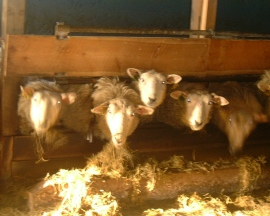

Fossane hat ca. 80940 qm Felder für Futteranbau sowie 40470 qm als Weidefläche. Außerdem haben wir zusammen mit anderen Bauern
gemeinsame Gebiete in den Bergen von Vormedalen. Fossane hat ca. 485640 qm Wald. Auf der Farm leben ca. 100 Schafe.
Die Milchproduktion war bis zum Frühjahr 2000 unsere Haupteinnahmequelle, bis wir die Milchrechte innerhalb Norwegens verkauften.
In den 90er Jahren erschloss sich durch die Vermietung von Ferienhäusern eine neue Einkommensquelle sowie durch den Bau des
neuen Wasserkraftwerkes. Siehe dazu auch unsere Fossane Energie Homepage.